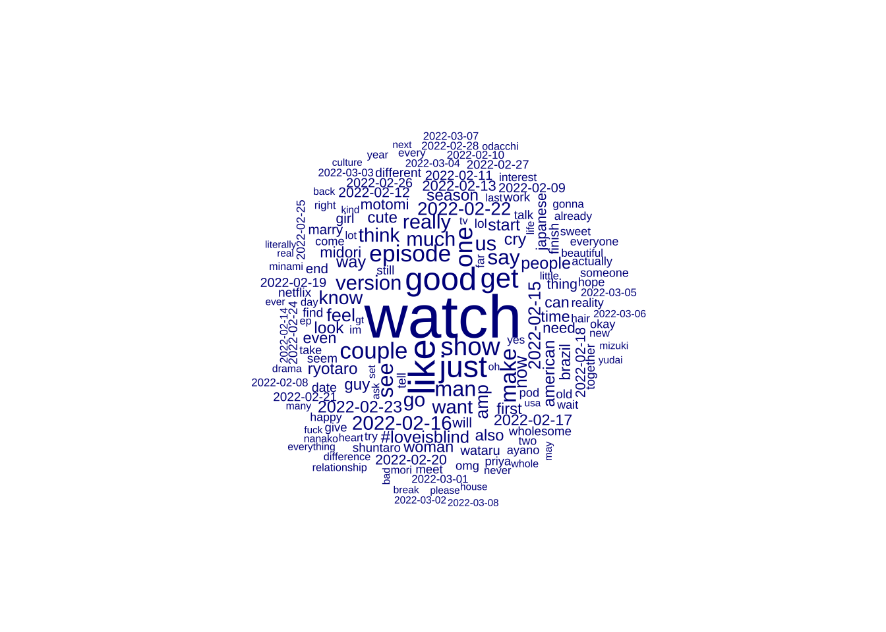
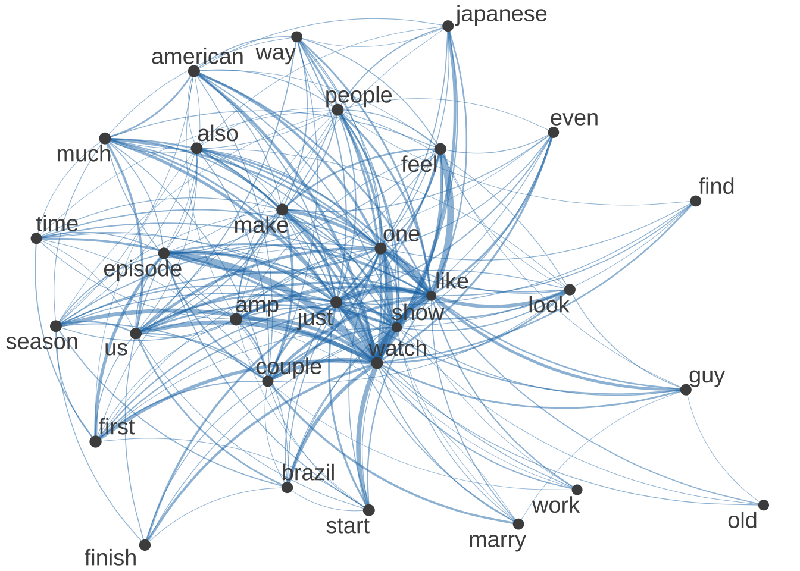

My current research question: How do Reddit and Twitter users feel about the show Love is Blind Japan?
Working with the Data
In my previous blog post I had started to clean the data using two different methods. After discussing I decided I’ll remove the “textclean” package in case of issues. I will also do some back tracking to have both twitter and reddit in separate databases.
reddit <-subset(reddit_data, select =c("body", "created_utc")) reddit$created_utc <-as.Date.POSIXct(reddit$created_utc)reddit <- reddit %>%select(text = body, date = created_utc)# remove deleted or removed comments by moderators of the subreddit (ones that only contain [deleted] or [removed])reddit <- reddit %>%filter(!text =='[deleted]') %>%filter(!text =='[removed]')
Here I’m able to see that Twitter more often used shortened words (i.e. “ppl” instead of “people”). However I also noticed that Twitter more often used non english. This is likely due to Reddit being a mostly English speaking platform compared to Twitter.
Overall though I think that the data wasn’t too bad. I still would like to remove htmls (they aren’t helpful to analyzing). However in class a good point was brought up that emojis do often display emotions. Thus I think for now I will leave them in.
For non English I’ll still remove them as I can’t accurately analyze them without knowing the language.
Below you will find ways that didn’t seem to work for me,
Cleaning the Data and Creating Tokens
To see if cleaning the data works I’ll go ahead and test first with Reddit data.
Code
reddit_corpus <-corpus(reddit)redditsummary <-summary(reddit_corpus)#remove non english languages reddit_corpus <-subset(reddit_corpus, detect_language(reddit_corpus) =="en") #remove htmlsreddit_corpus <-gsub(" ?(f|ht)(tp)(s?)(://)(.*)[.|/](.*)", "", reddit_corpus)#remove emojisonly_ascii_regexp <-'[^\u0001-\u007F]+|<U\\+\\w+>'reddit_corpus <- reddit_corpus %>%str_replace_all(regex(only_ascii_regexp), "") #remove htmlsreddit_corpus <-gsub(" ?(f|ht)(tp)(s?)(://)(.*)[.|/](.*)", "", reddit_corpus)reddit_corpus <- reddit_corpus[!is.na(reddit_corpus)]
Error in base::rowSums(x, na.rm = na.rm, dims = dims, ...): 'x' must be an array of at least two dimensions
Code
df <-data.frame(word =names(words),freq=words)
While this works for creating tokens, unfortunately it has removed the date column. While this is fine to gather an overall sentiment, it would be nice to keep the other column there.
Additionally trying to create a dtm from this doesn’t seem to work.
Trying a Different Way
Below you will see me attempt to have a corpus vector date (where it says large simple corpus). This is because I would like the date columns. I will once again try with Reddit first.
Code
test <-corpus(reddit)#remove non english languages test$text <-subset(test$text, detect_language(test) =="en") #remove htmlstest$text <-gsub(" ?(f|ht)(tp)(s?)(://)(.*)[.|/](.*)", "", test$text)#remove emojisonly_ascii_regexp <-'[^\u0001-\u007F]+|<U\\+\\w+>'test$text <- test$text %>%str_replace_all(regex(only_ascii_regexp), "") test <-Corpus(VectorSource(test))test <- test %>%tm_map(removeNumbers) %>%tm_map(removePunctuation) %>%tm_map(stripWhitespace) %>%# remove stop wordstm_map(content_transformer(tolower)) %>%tm_map(removeWords, stopwords("english")) # remove stop words
Error in tokens_replace(test_tokens, pattern = lexicon::hash_lemmas$token, : object 'test_tokens' not found
While this has created a large simple corpus which has included the two columns I mentioned, I can’t seem to create “tokens” this way which could make researching difficult.
DTM & Word Cloud
Code
dtm <-TermDocumentMatrix(test) matrix <-as.matrix(dtm) words <-sort(rowSums(matrix),decreasing=TRUE) df <-data.frame(word =names(words),freq=words)
I also noticed despite removing emojis and other languages this way it seems to still be in the matrix. While it only shows up once and awhile it is sort of strange.
Additional TM code
To try to help to remove more I will use addition tm code.
This seems to have kept the dates in the corpus! However here I noticed that the dates are also in the word cloud which I don’t want.
Additionally I learned I need a high minimum frequency to really have this work well. Otherwise there was an error saying it couldn’t show multiple words.
Way that Worked - Word Cloud with Lemmitized
Another way for Word Clouds
I was able to find another way to do text plots that don’t involve using the “tm” package to create a corpus thanks to the class blog! Below you will see the word cloud for Reddit Post.
I first tried to do it allowing stop words, however it seems that it was overtaken by words such as “I”, “the”, and “and”. So I put the remove stop words back in.
Twitter Word Cloud
Below you will see the word cloud for Twitter posts.
Something I noticed was that when I tried to subset with English, the amount of tweets in the Twitter corpus went down by almost half. This seemed to be an error issue as when I looked at my data it shouldn’t have gone down more than 1,000. This has lead me to remove the detect language function. I have added a new function that strip non-ascii characters which will remove emojis and non English.
Something else I noticed for Twitter is that it seems that some non English or emojis are frequently used. My guess is that it’s mostly “love is blind japan” in Japanese.
#loveisblindjapan is one of the largest along with blind, love and japan for twitter. This is unsurprising as that’s the name of the show.
Reddit used the word like and think a lot. However interestingly Japanese is mentioned more than the word Japan.
The names of the actual contestants are not mentioned as much as I would think. They’re still mentioned often but are not major words in the word cloud.
Japanese characters and possibly emojis both made there way into the word cloud. I’m unsure why.
TM Package
Code
reddit_tm <-corpus(reddit)only_ascii_regexp <-'[^\u0001-\u03FF]+|<U\\+\\w+>'reddit_tm <- reddit$text %>%str_replace_all(regex(only_ascii_regexp), "") #remove non english languages reddit_tm <- stringi::stri_trans_general(reddit_tm, "latin-ascii")#remove htmlsreddit_tm <-gsub(" ?(f|ht)(tp)(s?)(://)(.*)[.|/](.*)", "", reddit_tm)reddit_tm <-Corpus(VectorSource(reddit_tm))#change non letters to spacestoSpace <-content_transformer(function (x , pattern ) gsub(pattern, " ", x))reddit_tm <- reddit_tm %>%tm_map(removePunctuation) %>%tm_map(stripWhitespace) %>%# remove multiple white spacetm_map(toSpace, "/") %>%tm_map(toSpace, "@") %>%tm_map(toSpace, "\\|") %>%tm_map(content_transformer(tolower)) %>%tm_map(removeWords, stopwords("english")) # remove stop words
Warning in tm_map.SimpleCorpus(., removePunctuation): transformation drops
documents
Warning in tm_map.SimpleCorpus(., stripWhitespace): transformation drops
documents
Warning in tm_map.SimpleCorpus(., toSpace, "/"): transformation drops documents
Warning in tm_map.SimpleCorpus(., toSpace, "@"): transformation drops documents
Warning in tm_map.SimpleCorpus(., toSpace, "\\|"): transformation drops
documents
Warning in tm_map.SimpleCorpus(., content_transformer(tolower)): transformation
drops documents
Warning in tm_map.SimpleCorpus(., removeWords, stopwords("english")):
transformation drops documents
I thought that the ’s was part of some sort of stop word. However it seems that it isn’t for either. My guess is it may follow names of people in the show.
Even with another version of removing emojis and non English there still seems to be some in the data, however not very much.
Like and think were both very popular words for Twitter and Reddit.
Not all the contestants were posted about the same amount.
Despite the show being about marriage, the words married, marry, or marriage weren’t the top words for either Twitter or Reddit.
Overall between the two types of word clouds, I prefer the lemmitized version so I will continue using that one.
However I am surprised by the fact that they’re so different. The only difference in code is really the “toSpace” which removes just a couple of extra things.
Emoji Thoughts
Using the function that I found from the DACSS slack channel I found that it also has a nice side affect of removing non English as well.
Additionally I’ve noticed that there’s has been few emojis that have made it into the word cloud. I also don’t feel confident in decoding emojis and being able to do a sentiment analysis.
Thus for this project I will not keep emojis.
Attempting to Remove Japanese
Since I noticed there was a lot of Japanese still left in the word cloud I went to test if I could remove more with the previous function I had used. This along with the other three options seems to have the best results!
Below you will see a test version.
Code
str_rm_jap =function(x) {#we replace japanese blocks with nothing, and clean any double whitespace from this#reference at http://www.rikai.com/library/kanjitables/kanji_codes.unicode.shtml x %>%#japanese style punctuationstr_replace_all("[\u3000-\u303F]", "") %>%#katakanastr_replace_all("[\u30A0-\u30FF]", "") %>%#hiraganastr_replace_all("[\u3040-\u309F]", "") %>%#kanjistr_replace_all("[\u4E00-\u9FAF]", "") %>%#remove excess whitespacestr_replace_all(" +", " ") %>%str_trim()}test_corpus<- twitter$text%>% str_rm_japtest_posts <- test_corpus %>%str_replace_all(regex(only_ascii_regexp), "") #remove non english languages test_posts <- stringi::stri_trans_general(test_posts, "latin-ascii")#remove htmlstest_corpus <-gsub(" ?(f|ht)(tp)(s?)(://)(.*)[.|/](.*)", "", test_corpus)test_corpus <- test_corpus[!is.na(test_corpus)]test_corpus_tokens <-tokens(test_corpus, remove_punct = T,remove_numbers = T)test_corpus_tokens <-tokens_tolower(test_corpus_tokens)test_corpus_tokens <-tokens_select(test_corpus_tokens, pattern =stopwords("en"), selection ="remove")test_lemmitized <-tokens_replace(test_corpus_tokens, pattern = lexicon::hash_lemmas$token, replacement = lexicon::hash_lemmas$lemma)library(quanteda.textplots)test_corpus_edit <- test_lemmitized %>%dfm(remove =stopwords('english'), remove_punct =TRUE) %>%dfm_trim(min_termfreq =50, verbose =FALSE)
Warning: '...' should not be used for tokens() arguments; use 'tokens()' first.
Warning: 'remove' is deprecated; use dfm_remove() instead
While doing this I noticed there were a lot of Spanish words as well. In order to combat this I decided to go back to using the subset function.
Removing all non English
While this has taken care of a lot of issues, unfortunately it has removed a lot of data. This has left me with only 7,990 tweets out of the original 14,866.
love japan like blind
7352 5886 5647 5270
think just #loveisblindjapan good
4582 3670 3445 3417
say get
3378 2982
Code
topfeatures(twitter_corpus_dfm, 10)
love blind japan #loveisblindjapan
5965 5068 4766 3445
watch like good just
2135 1200 1001 936
get show
806 727
Code
topfeatures(reddit_corpus_dfm, 10)
like think say just good get show really see feel
4504 4120 2856 2750 2455 2196 2120 2007 1953 1897
Here we can see that overall the top ten words:
Love is Blind Japan Top Features
All Social Media
Twitter
Reddit
love
love
like
japan
blind
think
like
japan
say
blind
#loveisblindjapan
just
think
watch
good
just
like
get
#loveisblindjapan
good
show
good
just
really
say
get
see
get
show
feel
Here we can see a few things:
While “love”, “blind”, and “japan” are the top features in Twitter, this is most likely due to the show’s name. When comparing this to both the category social media that combine them and Reddit, like made it much higher.
All three column’s top ten words have multiple words that are focusing on how people are watching the show feel.
From this brief look it seems there’s a positive thought on show as “good” were both in the top ten for Twitter and Reddit.
Trying a Co-occurrence Matrix
I will give a test try to having a max term frequency for Twitter, as Twitter’s top four words have to do with the shows name.
Code
# let's create a nicer dfm by limiting to words that appear frequently and are in more than 30% of chapterssmaller_dfm <-dfm_trim(twitter_corpus_dfm, max_termfreq =3400, min_termfreq =30)smaller_dfm <-dfm_trim(smaller_dfm, max_docfreq = .3, docfreq_type ="prop")textplot_wordcloud(smaller_dfm, min_count =100,random_order =FALSE)

Code
# create fcm from dfmsmaller_fcm <-fcm(smaller_dfm)# check the dimensions (i.e., the number of rows and the number of columnns)# of the matrix we createddim(smaller_fcm)
[1] 485 485
Code
myFeatures <-names(topfeatures(smaller_fcm, 30))# retain only those top features as part of our matrixeven_smaller_fcm <-fcm_select(smaller_fcm, pattern = myFeatures, selection ="keep")# check dimensionsdim(even_smaller_fcm)
[1] 30 30
Code
# compute size weight for vertices in networksize <-log(colSums(even_smaller_fcm))# create plottextplot_network(even_smaller_fcm, vertex_size = size /max(size) *3)

Final Thoughts (TLDR)
Final thoughts
I did end up looking at Youtube to see if there were clips of this show online that were from Netflix. There unfortunately only seemed to be a trailer for the show. Clips of this season were fairly rare there.
After debating for awhile I decided to use the subset language option to remove all other languages for Twitter (Reddit did not have this problem most likely due to the main user base being English speaking Americans). Although this did cut my database down significantly I believe this was the best option as it removes any other language that I’m currently unable to analyze properly.
Conversely Reddit had very few other languages. However to keep the data similar I used subset for Reddit too.
This was also done so if I would like to use both the separate data and the data combined it is the same.
I decided to use the quanteda.textplots for the word cloud instead of the TM package. This is due to the TM package having issues when I try to reload the word clouds.
I have decided to lemmitize my tokens as it works to create a more accurate picture of words that were important to both Twitter and Reddit posters.
I have removed emojis due to the issues of most of the emoji packages I have found not working. Additionally I’m not confident that I could accurately use them for a sentiment analysis, or that there are that many in the first place.
For my tokens I have added remove_symbols and remove_url for both Reddit and Twitter to help out with people spamming urls to shows or gifs, and the “@” sign.
When I checked the top features it was interesting to see what words were used the most. While none of it was surprising, it did help me to understand the words a bit more.
I believe a co-occurance matrix may be useful for Twitter as it allows me to remove the name of the show and the hashtag better.
Questions and frustrations I still have
I’m still unsure how to keep both the date and the text as separate columns using the corpus() function from quanteda. I can keep it in the summary, but I’m not sure if I can use the dates outside of that.
The summary also only goes to 100, I’m not sure how I can make it show me all of the data either.
When I tried having a maximum frequency for Twitter’s word cloud it did bring out the dates in the word cloud but I’m not sure if that solves my problem either.
I am unsure if looking at all the data together or separately is currently the best. I have a word cloud using all the social media data below. This would change my research question.
Current Research Question: How do Reddit and Twitter users feel about the show Love is Blind Japan?
Possibly Research Question: How do Reddit and Twitter users sentiment differentiate about the show Love is Blind Japan?
This is the question I had previously.
Future Work
Here are a few things I’d like to do in blog post 4:
Try to group by date. With the date column seemingly working now I’d like to see if grouping by date would work.
Try to use the textplot_network on reddit as well as the combined data set. Although I’m not sure if I will I think it could produce some interesting results.
Try to find a way to remove the dates from the word clouds. My current thought is to just make a separate r chunk that only has twitter$text to remove the dates.
Try to decide on how or if I want to use co-occurrence.
Final Code
Code
#write csv has been commented out due to it continously trying to save an "updated version" in Git. reddit_data <-read.csv(here::here("posts", "_data", "loveisblindjapan.csv"))twitter1 <-read.csv(here::here("posts", "_data", "tweets.csv"))twitter2 <-read.csv(here::here("posts", "_data", "tweets#.csv"))reddit <-subset(reddit_data, select =c("body", "created_utc")) reddit$created_utc <-as.Date.POSIXct(reddit$created_utc)reddit <- reddit %>%select(text = body, date = created_utc)# remove deleted or removed comments by moderators of the subreddit (ones that only contain [deleted] or [removed])reddit <- reddit %>%filter(!text =='[deleted]') %>%filter(!text =='[removed]')#remove counting columntwitter1 <- twitter1 %>%select(!c(X, User))twitter2 <- twitter2 %>%select(!c(X, User))twitter <-merge(twitter1, twitter2, by=c('Tweet','Tweet', 'Date', 'Date'),all=T, ignore_case =T)#write.csv(twitter, here::here("posts", "_data", "twitter.csv") , all(T) )names(twitter) <-tolower(names(twitter))twitter <- twitter %>%rename_at('tweet', ~'text', 'Date'~'date')twitter$date <-as.Date(strftime(twitter$date, format="%Y-%m-%d"))# remove duplicate tweetstwitter <- twitter %>%distinct(text, date, .keep_all =TRUE)#check for duplicate tweetstwitter %in%unique(twitter[ duplicated(twitter)])
love japan like blind
7352 5886 5647 5270
think just #loveisblindjapan good
4582 3670 3445 3417
say get
3378 2982
Code
topfeatures(twitter_corpus_dfm, 10)
love blind japan #loveisblindjapan
5965 5068 4766 3445
watch like good just
2135 1200 1001 936
get show
806 727
Code
topfeatures(reddit_corpus_dfm, 10)
like think say just good get show really see feel
4504 4120 2856 2750 2455 2196 2120 2007 1953 1897
Code
# let's create a nicer dfm by limiting to words that appear frequently and are in more than 30% of chapterssmaller_dfm <-dfm_trim(twitter_corpus_dfm, max_termfreq =3400, min_termfreq =30)smaller_dfm <-dfm_trim(smaller_dfm, max_docfreq = .3, docfreq_type ="prop")textplot_wordcloud(smaller_dfm, min_count =100,random_order =FALSE)
Code
# create fcm from dfmsmaller_fcm <-fcm(smaller_dfm)# check the dimensions (i.e., the number of rows and the number of columnns)# of the matrix we createddim(smaller_fcm)
[1] 485 485
Code
myFeatures <-names(topfeatures(smaller_fcm, 30))# retain only those top features as part of our matrixeven_smaller_fcm <-fcm_select(smaller_fcm, pattern = myFeatures, selection ="keep")# check dimensionsdim(even_smaller_fcm)
[1] 30 30
Code
# compute size weight for vertices in networksize <-log(colSums(even_smaller_fcm))# create plottextplot_network(even_smaller_fcm, vertex_size = size /max(size) *3)
Source Code
---title: "Blog Post Three"author: "Molly Hackbarth"desription: "Working with the data"date: "10/15/2022"format: html: toc: true code-fold: true code-copy: true code-tools: truecategories: - blog posts - hw3 - Molly Hackbarth---```{r}#| label: setup#| warning: falselibrary(tidyverse)library(cld3)library(dplyr)library(stringi)library(stringr)library(here)library(devtools)library(tidytext)library(plyr)library(quanteda)library(preText)library(quanteda.textstats)library(quanteda.textmodels)library(quanteda.textplots)library(hunspell)library(wordcloud)library(RColorBrewer)library(tm)library(emojifont)knitr::opts_chunk$set(echo =TRUE)```# Research Question**My current research question:** How do Reddit and Twitter users feel about the show *Love is Blind Japan*?# Working with the DataIn my previous blog post I had started to clean the data using two different methods. After discussing I decided I'll remove the "textclean" package in case of issues. I will also do some back tracking to have both twitter and reddit in separate databases.### Adding Data in Separately```{r reading in the data}reddit_data <-read.csv(here::here("posts", "_data", "loveisblindjapan.csv"))twitter1 <-read.csv(here::here("posts", "_data", "tweets.csv"))twitter2 <-read.csv(here::here("posts", "_data", "tweets#.csv"))``````{r}reddit <-subset(reddit_data, select =c("body", "created_utc")) reddit$created_utc <-as.Date.POSIXct(reddit$created_utc)reddit <- reddit %>%select(text = body, date = created_utc)# remove deleted or removed comments by moderators of the subreddit (ones that only contain [deleted] or [removed])reddit <- reddit %>%filter(!text =='[deleted]') %>%filter(!text =='[removed]')``````{r}#remove counting columntwitter1 <- twitter1 %>%select(!c(X, User))twitter2 <- twitter2 %>%select(!c(X, User))twitter <-merge(twitter1, twitter2, by=c('Tweet','Tweet', 'Date', 'Date'),all=T, ignore_case =T)write.csv(twitter, here::here("posts", "_data", "twitter.csv") , all(T) )names(twitter) <-tolower(names(twitter))twitter <- twitter %>%rename_at('tweet', ~'text', 'Date'~'date')twitter$date <-as.Date(strftime(twitter$date, format="%Y-%m-%d"))# remove duplicate tweetstwitter <- twitter %>%distinct(text, date, .keep_all =TRUE)#check for duplicate tweetstwitter %in%unique(twitter[ duplicated(twitter)]) ``````{r}allsocialmedia <-merge(twitter, reddit, by=c('text','text', 'date', 'date'),all=T, ignore_case =T)write.csv(twitter, here::here("posts", "_data", "loveisblind_socialmedia.csv") , all(T) )```## Using HunSpellAfter listening to class lectures, I decided to go ahead and download the "hunspell" package so I could look at my errors.```{r}spell_check_reddit <-hunspell(reddit$text)spell_check_twitter <-hunspell(twitter$text)```Here I'm able to see that Twitter more often used shortened words (i.e. "ppl" instead of "people"). However I also noticed that Twitter more often used non english. This is likely due to Reddit being a mostly English speaking platform compared to Twitter.Overall though I think that the data wasn't too bad. I still would like to remove htmls (they aren't helpful to analyzing). However in class a good point was brought up that emojis do often display emotions. Thus I think for now I will leave them in.For non English I'll still remove them as I can't accurately analyze them without knowing the language.Below you will find ways that didn't seem to work for me,### Cleaning the Data and Creating TokensTo see if cleaning the data works I'll go ahead and test first with Reddit data.```{r}reddit_corpus <-corpus(reddit)redditsummary <-summary(reddit_corpus)#remove non english languages reddit_corpus <-subset(reddit_corpus, detect_language(reddit_corpus) =="en") #remove htmlsreddit_corpus <-gsub(" ?(f|ht)(tp)(s?)(://)(.*)[.|/](.*)", "", reddit_corpus)#remove emojisonly_ascii_regexp <-'[^\u0001-\u007F]+|<U\\+\\w+>'reddit_corpus <- reddit_corpus %>%str_replace_all(regex(only_ascii_regexp), "") #remove htmlsreddit_corpus <-gsub(" ?(f|ht)(tp)(s?)(://)(.*)[.|/](.*)", "", reddit_corpus)reddit_corpus <- reddit_corpus[!is.na(reddit_corpus)]``````{r}reddit_corpus_tokens <-tokens(reddit_corpus, remove_punct = T,remove_numbers = T)reddit_corpus_tokens <-tokens_tolower(reddit_corpus_tokens)reddit_corpus_tokens <-tokens_select(reddit_corpus_tokens, pattern =stopwords("en"), selection ="remove")reddit_lemmitized <-tokens_replace(reddit_corpus_tokens, pattern = lexicon::hash_lemmas$token, replacement = lexicon::hash_lemmas$lemma)```### Trying to create a DTM```{r creating a dtm 1}dtm <-TermDocumentMatrix(reddit_lemmitized) matrix <-as.matrix(dtm) words <-sort(rowSums(matrix),decreasing=TRUE) df <-data.frame(word =names(words),freq=words)```While this works for creating tokens, unfortunately it has removed the date column. While this is fine to gather an overall sentiment, it would be nice to keep the other column there.Additionally trying to create a dtm from this doesn't seem to work.### Trying a Different WayBelow you will see me attempt to have a corpus vector date (where it says large simple corpus). This is because I would like the date columns. I will once again try with Reddit first.```{r}test <-corpus(reddit)#remove non english languages test$text <-subset(test$text, detect_language(test) =="en") #remove htmlstest$text <-gsub(" ?(f|ht)(tp)(s?)(://)(.*)[.|/](.*)", "", test$text)#remove emojisonly_ascii_regexp <-'[^\u0001-\u007F]+|<U\\+\\w+>'test$text <- test$text %>%str_replace_all(regex(only_ascii_regexp), "") test <-Corpus(VectorSource(test))test <- test %>%tm_map(removeNumbers) %>%tm_map(removePunctuation) %>%tm_map(stripWhitespace) %>%# remove stop wordstm_map(content_transformer(tolower)) %>%tm_map(removeWords, stopwords("english")) # remove stop words```#### Trying to Create Tokens```{r}test_tokens <-tokens(test, remove_punct = T,remove_numbers = T)test_tokens <-tokens_tolower(test_tokens)lemmitized <-tokens_replace(test_tokens, pattern = lexicon::hash_lemmas$token, replacement = lexicon::hash_lemmas$lemma)```While this has created a large simple corpus which has included the two columns I mentioned, I can't seem to create "tokens" this way which could make researching difficult.#### DTM & Word Cloud```{r}dtm <-TermDocumentMatrix(test) matrix <-as.matrix(dtm) words <-sort(rowSums(matrix),decreasing=TRUE) df <-data.frame(word =names(words),freq=words)``````{r}library(wordcloud)library(RColorBrewer)set.seed(1234) # for reproducibility wordcloud(words = df$word, freq = df$freq, min.freq =50, max.words=100, random.order=FALSE, rot.per=0.35, colors=brewer.pal(8, "Dark2"))```Here we can see the word cloud worked!I also noticed despite removing emojis and other languages this way it seems to still be in the matrix. While it only shows up once and awhile it is sort of strange.### Additional TM codeTo try to help to remove more I will use addition tm code.```{r}toSpace <-content_transformer(function (x , pattern ) gsub(pattern, " ", x))test <- test %>%tm_map(removeNumbers) %>%tm_map(removePunctuation) %>%tm_map(stripWhitespace) %>%tm_map(toSpace, "/") %>%tm_map(toSpace, "@") %>%tm_map(toSpace, "\\|")```### Dealing with some issuesI realized my current removing non English is not working completely. Thus I'm trying a different formula in addition to make it work.I also realized I was using tm_map to remove numbers which may have caused an issue.```{r reddit}test2 <-corpus(reddit)test2 <-subset(test2, detect_language(test2) =="en") test2 <- stringi::stri_trans_general(test2, "latin-ascii")#remove htmlstest2 <-gsub(" ?(f|ht)(tp)(s?)(://)(.*)[.|/](.*)", "", test2)test2 <-Corpus(VectorSource(reddit_tm))test2 <-subset(test2, detect_language(test2) =="en") test2 <- stringi::stri_trans_general(test2, "latin-ascii")#remove htmlstest2 <-gsub(" ?(f|ht)(tp)(s?)(://)(.*)[.|/](.*)", "", test3)#remove emojisonly_ascii_regexp <-'[^\u0001-\u007F]+|<U\\+\\w+>'test2 <- test2 %>%str_replace_all(regex(only_ascii_regexp), "") #change non letters to spacestoSpace <-content_transformer(function (x , pattern ) gsub(pattern, " ", x))test2 <- test %>%tm_map(removePunctuation) %>%tm_map(stripWhitespace) %>%# remove stop wordstm_map(toSpace, "/") %>%tm_map(toSpace, "@") %>%tm_map(toSpace, "\\|") %>%tm_map(content_transformer(tolower)) %>%tm_map(removeWords, stopwords("english")) # remove stop words```#### Trying a DTM & Word Cloud Again```{r}dtm <-TermDocumentMatrix(test2) matrix <-as.matrix(dtm) words <-sort(rowSums(matrix),decreasing=TRUE) df <-data.frame(word =names(words),freq=words)``````{r}library(wordcloud)set.seed(1234) # for reproducibility wordcloud(words = df$word, freq = df$freq, min.freq =500, max.words=200, random.order=FALSE, rot.per=0.35, colors=brewer.pal(8, "Dark2"))```This seems to have kept the dates in the corpus! However here I noticed that the dates are also in the word cloud which I don't want.Additionally I learned I need a high minimum frequency to really have this work well. Otherwise there was an error saying it couldn't show multiple words.# Way that Worked - Word Cloud with Lemmitized### Another way for Word CloudsI was able to find another way to do text plots that don't involve using the "tm" package to create a corpus thanks to the class blog! Below you will see the word cloud for Reddit Post.```{r}library(quanteda.textplots)reddit_corpus_edit <- reddit_lemmitized %>%dfm(remove =stopwords('english'), remove_punct =TRUE) %>%dfm_trim(min_termfreq =10, verbose =FALSE)textplot_wordcloud(reddit_corpus_edit, max_words=100, color="red")```I first tried to do it allowing stop words, however it seems that it was overtaken by words such as "I", "the", and "and". So I put the remove stop words back in.#### Twitter Word CloudBelow you will see the word cloud for Twitter posts.```{r}twitter_corpus <-corpus(twitter)twittersummary <-summary(twitter_corpus)#remove non english languages twitter_corpus <-subset(twitter_corpus, detect_language(twitter_corpus) =="en") twitter_corpus <- stringi::stri_trans_general(twitter_corpus, "latin-ascii")#remove htmlstwitter_corpus <-gsub(" ?(f|ht)(tp)(s?)(://)(.*)[.|/](.*)", "", twitter_corpus)twitter_corpus <- twitter_corpus[!is.na(twitter_corpus)]twitter_corpus_tokens <-tokens(twitter_corpus, remove_punct = T,remove_numbers = T)twitter_corpus_tokens <-tokens_tolower(twitter_corpus_tokens)twitter_corpus_tokens <-tokens_select(twitter_corpus_tokens, pattern =stopwords("en"), selection ="remove")twitter_lemmitized <-tokens_replace(twitter_corpus_tokens, pattern = lexicon::hash_lemmas$token, replacement = lexicon::hash_lemmas$lemma)library(quanteda.textplots)twitter_corpus_edit <- twitter_lemmitized %>%dfm(remove =stopwords('english'), remove_punct =TRUE) %>%dfm_trim(min_termfreq =10, verbose =FALSE)textplot_wordcloud(twitter_corpus_edit, max_words=100, color="blue")```Something I noticed was that when I tried to subset with English, the amount of tweets in the Twitter corpus went down by almost half. This seemed to be an error issue as when I looked at my data it shouldn't have gone down more than 1,000. This has lead me to remove the detect language function. I have added a new function that strip non-ascii characters which will remove emojis and non English.Something else I noticed for Twitter is that it seems that some non English or emojis are frequently used. My guess is that it's mostly "love is blind japan" in Japanese.```{r}#library(emojifont) #reads japanese?only_ascii_regexp <-'[^\u0001-\u03FF]+|<U\\+\\w+>'twittertest <- twitter$text %>%str_replace_all(regex(only_ascii_regexp), "") #remove non english languages #twittertest <- stringi::stri_trans_general(twitter_corpus, "latin-ascii")#remove htmlstwittertest <-gsub(" ?(f|ht)(tp)(s?)(://)(.*)[.|/](.*)", "", twittertest)twittertest <- twittertest[!is.na(twittertest)]twitter_corpus_tokens1 <-tokens(twittertest, remove_punct = T,remove_numbers = T)twitter_corpus_tokens1 <-tokens_tolower(twitter_corpus_tokens1)twitter_corpus_tokens1 <-tokens_select(twitter_corpus_tokens1, pattern =stopwords("en"), selection ="remove")twitter_lemmitized1 <-tokens_replace(twitter_corpus_tokens1, pattern = lexicon::hash_lemmas$token, replacement = lexicon::hash_lemmas$lemma)library(quanteda.textplots)twittertest1 <- twittertest %>%dfm(remove =stopwords('english'), remove_punct =TRUE) %>%dfm_trim(min_termfreq =10, verbose =FALSE)textplot_wordcloud(twittertest1, max_words=100, color="blue")```[**A quick note: For some reason the TM package and word clouds were a bit finicky. It sometimes seemed to work and sometimes did not.**]{.underline}# Code For New Word Clouds### Lemmetize```{r}reddit_corpus <-corpus(reddit)redditsummary <-summary(reddit_corpus)only_ascii_regexp <-'[^\u0001-\u03FF]+|<U\\+\\w+>'reddit_corpus <- reddit$text %>%str_replace_all(regex(only_ascii_regexp), "") #remove non english languages reddit_corpus <- stringi::stri_trans_general(reddit_corpus, "latin-ascii")#remove emojisonly_ascii_regexp <-'[^\u0001-\u007F]+|<U\\+\\w+>'reddit_corpus <- reddit_corpus %>%str_replace_all(regex(only_ascii_regexp), "") #remove htmlsreddit_corpus <-gsub(" ?(f|ht)(tp)(s?)(://)(.*)[.|/](.*)", "", reddit_corpus)reddit_corpus <- reddit_corpus[!is.na(reddit_corpus)]reddit_corpus_tokens <-tokens(reddit_corpus, remove_punct = T,remove_numbers = T)reddit_corpus_tokens <-tokens_tolower(reddit_corpus_tokens)reddit_corpus_tokens <-tokens_select(reddit_corpus_tokens, pattern =stopwords("en"), selection ="remove")reddit_lemmitized <-tokens_replace(reddit_corpus_tokens, pattern = lexicon::hash_lemmas$token, replacement = lexicon::hash_lemmas$lemma)library(quanteda.textplots)reddit_corpus_edit <- reddit_lemmitized %>%dfm(remove =stopwords('english'), remove_punct =TRUE) %>%dfm_trim(min_termfreq =30, verbose =FALSE)textplot_wordcloud(reddit_corpus_edit, max_words=200, color="red")``````{r}library(emojifont) #reads japanese?only_ascii_regexp <-'[^\u0001-\u03FF]+|<U\\+\\w+>'twitter_corpus<- twitter$text %>%str_replace_all(regex(only_ascii_regexp), "") twitter_corpus <-corpus(twitter_corpus)twittersummary <-summary(twitter_corpus)#remove non english languages twitter_corpus <- stringi::stri_trans_general(twitter_corpus, "latin-ascii")#remove htmlstwitter_corpus <-gsub(" ?(f|ht)(tp)(s?)(://)(.*)[.|/](.*)", "", twitter_corpus)twitter_corpus <- twitter_corpus[!is.na(twitter_corpus)]twitter_corpus_tokens <-tokens(twitter_corpus, remove_punct = T,remove_numbers = T)twitter_corpus_tokens <-tokens_tolower(twitter_corpus_tokens)twitter_corpus_tokens <-tokens_select(twitter_corpus_tokens, pattern =stopwords("en"), selection ="remove")twitter_lemmitized <-tokens_replace(twitter_corpus_tokens, pattern = lexicon::hash_lemmas$token, replacement = lexicon::hash_lemmas$lemma)library(quanteda.textplots)twitter_corpus_edit <- twitter_lemmitized %>%dfm(remove =stopwords('english'), remove_punct =TRUE) %>%dfm_trim(min_termfreq =30, verbose =FALSE)textplot_wordcloud(twitter_corpus_edit, max_words=200, color="blue")```Some interesting facts for Lemmetize plot- #loveisblindjapan is one of the largest along with blind, love and japan for twitter. This is unsurprising as that's the name of the show.- Reddit used the word like and think a lot. However interestingly Japanese is mentioned more than the word Japan.- The names of the actual contestants are not mentioned as much as I would think. They're still mentioned often but are not major words in the word cloud.- Japanese characters and possibly emojis both made there way into the word cloud. I'm unsure why.### TM Package```{r}reddit_tm <-corpus(reddit)only_ascii_regexp <-'[^\u0001-\u03FF]+|<U\\+\\w+>'reddit_tm <- reddit$text %>%str_replace_all(regex(only_ascii_regexp), "") #remove non english languages reddit_tm <- stringi::stri_trans_general(reddit_tm, "latin-ascii")#remove htmlsreddit_tm <-gsub(" ?(f|ht)(tp)(s?)(://)(.*)[.|/](.*)", "", reddit_tm)reddit_tm <-Corpus(VectorSource(reddit_tm))#change non letters to spacestoSpace <-content_transformer(function (x , pattern ) gsub(pattern, " ", x))reddit_tm <- reddit_tm %>%tm_map(removePunctuation) %>%tm_map(stripWhitespace) %>%# remove multiple white spacetm_map(toSpace, "/") %>%tm_map(toSpace, "@") %>%tm_map(toSpace, "\\|") %>%tm_map(content_transformer(tolower)) %>%tm_map(removeWords, stopwords("english")) # remove stop wordsreddit_dtm <-TermDocumentMatrix(reddit_tm) reddit_matrix <-as.matrix(reddit_dtm) reddit_words <-sort(rowSums(reddit_matrix),decreasing=TRUE) reddit_df <-data.frame(words =names(words),freq=words)set.seed(1234) # for reproducibility wordcloud(words = reddit_df$word, freq = reddit_df$freq, min.freq =50, max.words=100, random.order=FALSE, rot.per=0.35, colors=brewer.pal(8, "Dark2"))``````{r}twitter_tm <-corpus(twitter)only_ascii_regexp <-'[^\u0001-\u03FF]+|<U\\+\\w+>'twitter_tm <- twitter$text %>%str_replace_all(regex(only_ascii_regexp), "") #remove non english languages twitter_tm <- stringi::stri_trans_general(twitter_tm, "latin-ascii")#remove htmlstwitter_tm <-gsub(" ?(f|ht)(tp)(s?)(://)(.*)[.|/](.*)", "", twitter_tm)twitter_tm <-Corpus(VectorSource(twitter_tm))#change non letters to spacestoSpace <-content_transformer(function (x , pattern ) gsub(pattern, " ", x))twitter_tm <- twitter_tm %>%tm_map(removePunctuation) %>%tm_map(stripWhitespace) %>%# remove multiple white spacetm_map(toSpace, "/") %>%tm_map(toSpace, "@") %>%tm_map(toSpace, "\\|") %>%tm_map(content_transformer(tolower)) %>%tm_map(removeWords, stopwords("english")) # remove stop wordstwitter_dtm <-TermDocumentMatrix(twitter_tm) twitter_matrix <-as.matrix(twitter_dtm) twitter_words <-sort(rowSums(twitter_matrix),decreasing=TRUE) twitter_df <-data.frame(words =names(words),freq=words)set.seed(12345) # for reproducibility wordcloud(words = twitter_df$word, freq = twitter_df$freq, min.freq =50, max.words=100, random.order=FALSE, rot.per=0.35, colors=brewer.pal(8, "Dark2"))```Some interesting facts for TM:- I thought that the 's was part of some sort of stop word. However it seems that it isn't for either. My guess is it may follow names of people in the show.- Even with another version of removing emojis and non English there still seems to be some in the data, however not very much.- Like and think were both very popular words for Twitter and Reddit.- Not all the contestants were posted about the same amount.- Despite the show being about marriage, the words married, marry, or marriage weren't the top words for either Twitter or Reddit.Overall between the two types of word clouds, I prefer the **lemmitized version** so I will continue using that one.However I am surprised by the fact that they're so different. The only difference in code is really the "toSpace" which removes just a couple of extra things.## Emoji ThoughtsUsing the function that I found from the DACSS slack channel I found that it also has a nice side affect of removing non English as well.Additionally I've noticed that there's has been few emojis that have made it into the word cloud. I also don't feel confident in decoding emojis and being able to do a sentiment analysis.**Thus for this project I will not keep emojis.**### Attempting to Remove JapaneseSince I noticed there was a lot of Japanese still left in the word cloud I went to test if I could remove more with the previous function I had used. This along with the other three options seems to have the best results!Below you will see a test version.```{r}str_rm_jap =function(x) {#we replace japanese blocks with nothing, and clean any double whitespace from this#reference at http://www.rikai.com/library/kanjitables/kanji_codes.unicode.shtml x %>%#japanese style punctuationstr_replace_all("[\u3000-\u303F]", "") %>%#katakanastr_replace_all("[\u30A0-\u30FF]", "") %>%#hiraganastr_replace_all("[\u3040-\u309F]", "") %>%#kanjistr_replace_all("[\u4E00-\u9FAF]", "") %>%#remove excess whitespacestr_replace_all(" +", " ") %>%str_trim()}test_corpus<- twitter$text%>% str_rm_japtest_posts <- test_corpus %>%str_replace_all(regex(only_ascii_regexp), "") #remove non english languages test_posts <- stringi::stri_trans_general(test_posts, "latin-ascii")#remove htmlstest_corpus <-gsub(" ?(f|ht)(tp)(s?)(://)(.*)[.|/](.*)", "", test_corpus)test_corpus <- test_corpus[!is.na(test_corpus)]test_corpus_tokens <-tokens(test_corpus, remove_punct = T,remove_numbers = T)test_corpus_tokens <-tokens_tolower(test_corpus_tokens)test_corpus_tokens <-tokens_select(test_corpus_tokens, pattern =stopwords("en"), selection ="remove")test_lemmitized <-tokens_replace(test_corpus_tokens, pattern = lexicon::hash_lemmas$token, replacement = lexicon::hash_lemmas$lemma)library(quanteda.textplots)test_corpus_edit <- test_lemmitized %>%dfm(remove =stopwords('english'), remove_punct =TRUE) %>%dfm_trim(min_termfreq =50, verbose =FALSE)textplot_wordcloud(test_corpus_edit, max_words=200, color="blue")```While doing this I noticed there were a lot of Spanish words as well. In order to combat this I decided to go back to using the subset function.### Removing all non EnglishWhile this has taken care of a lot of issues, unfortunately it has removed a lot of data. This has left me with only **7,990 tweets** out of the original 14,866.I also have added remove_symbols to the tokens.```{r}test <-corpus(twitter$text)library(cld3)test <-subset(test, detect_language(test) =="en")test <-gsub(" ?(f|ht)(tp)(s?)(://)(.*)[.|/](.*)", "", test)test <- test[!is.na(test)]test_tokens <-tokens(test, remove_punct = T,remove_numbers = T,remove_symbols = T)test_tokens <-tokens_tolower(test_tokens)test_tokens <-tokens_select(test_tokens, pattern =stopwords("en"), selection ="remove")tests_lemmitized <-tokens_replace(test_tokens, pattern = lexicon::hash_lemmas$token, replacement = lexicon::hash_lemmas$lemma)library(quanteda.textplots)test_edit <- tests_lemmitized %>%dfm(remove =stopwords('english'), remove_punct =TRUE) %>%dfm_trim(min_termfreq =50, verbose =FALSE)textplot_wordcloud(test_edit, max_words=300, color="blue")```# Updated Word Cloud Code```{r reddit word cloud 2}reddit_corpus <-subset(reddit, detect_language(reddit) =="en")reddit_corpus <- reddit_corpus[!is.na(reddit_corpus)]reddit_corpus <-corpus(reddit)redditsummary <-summary(reddit_corpus)reddit_corpus_tokens <-tokens(reddit_corpus, remove_punct = T,remove_numbers = T, remove_symbols = T,remove_url = T)reddit_corpus_tokens <-tokens_tolower(reddit_corpus_tokens)reddit_corpus_tokens <-tokens_select(reddit_corpus_tokens, pattern =stopwords("en"), selection ="remove")reddit_lemmitized <-tokens_replace(reddit_corpus_tokens, pattern = lexicon::hash_lemmas$token, replacement = lexicon::hash_lemmas$lemma)library(quanteda.textplots)reddit_corpus_dfm <- reddit_lemmitized %>%dfm() %>%dfm_remove(stopwords('english')) %>%dfm_trim(min_termfreq =30, verbose =FALSE)textplot_wordcloud(reddit_corpus_dfm, max_words=200, color="red")``````{r}twitter_corpus <-subset(twitter, detect_language(twitter) =="en")twitter_corpus <- twitter_corpus[!is.na(twitter_corpus)]twitter_corpus <-corpus(twitter_corpus)twittersummary <-summary(twitter_corpus)twitter_corpus_tokens <-tokens(twitter_corpus, remove_punct = T,remove_numbers = T,remove_symbols = T,remove_url = T)twitter_corpus_tokens <-tokens_tolower(twitter_corpus_tokens)twitter_corpus_tokens <-tokens_select(twitter_corpus_tokens, pattern =stopwords("en"), selection ="remove")twitter_lemmitized <-tokens_replace(twitter_corpus_tokens, pattern = lexicon::hash_lemmas$token, replacement = lexicon::hash_lemmas$lemma)library(quanteda.textplots)twitter_corpus_dfm <- twitter_lemmitized %>%dfm() %>%dfm_remove(stopwords('english')) %>%dfm_trim(min_termfreq =30, verbose =FALSE)textplot_wordcloud(twitter_corpus_dfm, max_words=200, color="blue")``````{r both social medias word cloud}social_corpus <-subset(allsocialmedia, detect_language(allsocialmedia) =="en")social_corpus <-corpus(social_corpus)socialsummary <-summary(social_corpus)social_corpus <- social_corpus[!is.na(social_corpus)]social_corpus_tokens <-tokens(social_corpus, remove_punct = T,remove_numbers = T,remove_symbols = T,remove_url = T)social_corpus_tokens <-tokens_tolower(social_corpus_tokens)social_corpus_tokens <-tokens_select(social_corpus_tokens, pattern =stopwords("en"), selection ="remove")social_lemmitized <-tokens_replace(social_corpus_tokens, pattern = lexicon::hash_lemmas$token, replacement = lexicon::hash_lemmas$lemma)library(quanteda.textplots)social_corpus_dfm <- social_lemmitized %>%dfm() %>%dfm_remove(stopwords('english')) %>%dfm_trim(min_termfreq =30, verbose =FALSE)textplot_wordcloud(social_corpus_dfm, max_words=200, color="orange")```# Looking at the Data CloserBelow you will see some quick looks at data.```{r}topfeatures(social_corpus_dfm, 10)topfeatures(twitter_corpus_dfm, 10)topfeatures(reddit_corpus_dfm, 10)```Here we can see that overall the top ten words:| All Social Media | Twitter | Reddit ||-------------------|-------------------|--------|| love | love | like || japan | blind | think || like | japan | say || blind | #loveisblindjapan | just || think | watch | good || just | like | get || #loveisblindjapan | good | show || good | just | really || say | get | see || get | show | feel |: ~Love is Blind Japan Top Features~Here we can see a few things:- While "love", "blind", and "japan" are the top features in Twitter, this is most likely due to the show's name. When comparing this to both the category social media that combine them and Reddit, like made it much higher.- All three column's top ten words have multiple words that are focusing on how people are watching the show feel.- From this brief look it seems there's a positive thought on show as "good" were both in the top ten for Twitter and Reddit.## Trying a Co-occurrence MatrixI will give a test try to having a max term frequency for Twitter, as Twitter's top four words have to do with the shows name.```{r}# let's create a nicer dfm by limiting to words that appear frequently and are in more than 30% of chapterssmaller_dfm <-dfm_trim(twitter_corpus_dfm, max_termfreq =3400, min_termfreq =30)smaller_dfm <-dfm_trim(smaller_dfm, max_docfreq = .3, docfreq_type ="prop")textplot_wordcloud(smaller_dfm, min_count =100,random_order =FALSE)# create fcm from dfmsmaller_fcm <-fcm(smaller_dfm)# check the dimensions (i.e., the number of rows and the number of columnns)# of the matrix we createddim(smaller_fcm)myFeatures <-names(topfeatures(smaller_fcm, 30))# retain only those top features as part of our matrixeven_smaller_fcm <-fcm_select(smaller_fcm, pattern = myFeatures, selection ="keep")# check dimensionsdim(even_smaller_fcm)# compute size weight for vertices in networksize <-log(colSums(even_smaller_fcm))# create plottextplot_network(even_smaller_fcm, vertex_size = size /max(size) *3)```# Final Thoughts (TLDR)## Final thoughts- I did end up looking at Youtube to see if there were clips of this show online that were from Netflix. There unfortunately only seemed to be a trailer for the show. Clips of this season were fairly rare there.- After debating for awhile I decided to use the subset language option to remove all other languages for Twitter (Reddit did not have this problem most likely due to the main user base being English speaking Americans). Although this did cut my database down significantly I believe this was the best option as it removes any other language that I'm currently unable to analyze properly. - Conversely Reddit had very few other languages. However to keep the data similar I used subset for Reddit too. - This was also done so if I would like to use both the separate data and the data combined it is the same.- I decided to use the quanteda.textplots for the word cloud instead of the TM package. This is due to the TM package having issues when I try to reload the word clouds.- I have decided to lemmitize my tokens as it works to create a more accurate picture of words that were important to both Twitter and Reddit posters.- I have removed emojis due to the issues of most of the emoji packages I have found not working. Additionally I'm not confident that I could accurately use them for a sentiment analysis, or that there are that many in the first place.- For my tokens I have added remove_symbols and remove_url for both Reddit and Twitter to help out with people spamming urls to shows or gifs, and the "\@" sign.- When I checked the top features it was interesting to see what words were used the most. While none of it was surprising, it did help me to understand the words a bit more.- I believe a co-occurance matrix may be useful for Twitter as it allows me to remove the name of the show and the hashtag better.## Questions and frustrations I still have- I'm still unsure how to keep **both the date and the text** as separate columns using the corpus() function from quanteda. I can keep it in the summary, but I'm not sure if I can use the dates outside of that. - The summary also only goes to 100, I'm not sure how I can make it show me all of the data either. - When I tried having a maximum frequency for Twitter's word cloud it did bring out the dates in the word cloud but I'm not sure if that solves my problem either.- I am unsure if looking at all the data together or separately is currently the best. I have a word cloud using all the social media data below. This would change my research question. - **Current Research Question:** How do Reddit and Twitter users feel about the show *Love is Blind Japan*? - **Possibly Research Question:** How do Reddit and Twitter users sentiment differentiate about the show *Love is Blind Japan*? - This is the question I had previously.## Future WorkHere are a few things I'd like to do in blog post 4:- **Try to group by date.** With the date column seemingly working now I'd like to see if grouping by date would work.- **Try to use the textplot_network on reddit as well as the combined data set.** Although I'm not sure if I will I think it could produce some interesting results.- **Try to find a way to remove the dates from the word clouds.** My current thought is to just make a separate r chunk that only has twitter\$text to remove the dates.- **Try to decide on how or if I want to use co-occurrence.**# Final Code```{r}#write csv has been commented out due to it continously trying to save an "updated version" in Git. reddit_data <-read.csv(here::here("posts", "_data", "loveisblindjapan.csv"))twitter1 <-read.csv(here::here("posts", "_data", "tweets.csv"))twitter2 <-read.csv(here::here("posts", "_data", "tweets#.csv"))reddit <-subset(reddit_data, select =c("body", "created_utc")) reddit$created_utc <-as.Date.POSIXct(reddit$created_utc)reddit <- reddit %>%select(text = body, date = created_utc)# remove deleted or removed comments by moderators of the subreddit (ones that only contain [deleted] or [removed])reddit <- reddit %>%filter(!text =='[deleted]') %>%filter(!text =='[removed]')#remove counting columntwitter1 <- twitter1 %>%select(!c(X, User))twitter2 <- twitter2 %>%select(!c(X, User))twitter <-merge(twitter1, twitter2, by=c('Tweet','Tweet', 'Date', 'Date'),all=T, ignore_case =T)#write.csv(twitter, here::here("posts", "_data", "twitter.csv") , all(T) )names(twitter) <-tolower(names(twitter))twitter <- twitter %>%rename_at('tweet', ~'text', 'Date'~'date')twitter$date <-as.Date(strftime(twitter$date, format="%Y-%m-%d"))# remove duplicate tweetstwitter <- twitter %>%distinct(text, date, .keep_all =TRUE)#check for duplicate tweetstwitter %in%unique(twitter[ duplicated(twitter)]) allsocialmedia <-merge(twitter, reddit, by=c('text','text', 'date', 'date'),all=T, ignore_case =T)#write.csv(twitter, here::here("posts", "_data", "loveisblind_socialmedia.csv") , all(T) )``````{r}reddit_corpus <-subset(reddit, detect_language(reddit) =="en")reddit_corpus <- reddit_corpus[!is.na(reddit_corpus)]reddit_corpus <-corpus(reddit)redditsummary <-summary(reddit_corpus)reddit_corpus_tokens <-tokens(reddit_corpus, remove_punct = T,remove_numbers = T, remove_symbols = T,remove_url = T)reddit_corpus_tokens <-tokens_tolower(reddit_corpus_tokens)reddit_corpus_tokens <-tokens_select(reddit_corpus_tokens, pattern =stopwords("en"), selection ="remove")reddit_lemmitized <-tokens_replace(reddit_corpus_tokens, pattern = lexicon::hash_lemmas$token, replacement = lexicon::hash_lemmas$lemma)library(quanteda.textplots)reddit_corpus_dfm <- reddit_lemmitized %>%dfm() %>%dfm_remove(stopwords('english')) %>%dfm_trim(min_termfreq =30, verbose =FALSE)textplot_wordcloud(reddit_corpus_dfm, max_words=200, color="red")``````{r twitter word cloud 2}twitter_corpus <-subset(twitter, detect_language(twitter) =="en")twitter_corpus <- twitter_corpus[!is.na(twitter_corpus)]twitter_corpus <-corpus(twitter_corpus)twittersummary <-summary(twitter_corpus)twitter_corpus_tokens <-tokens(twitter_corpus, remove_punct = T,remove_numbers = T,remove_symbols = T,remove_url = T)twitter_corpus_tokens <-tokens_tolower(twitter_corpus_tokens)twitter_corpus_tokens <-tokens_select(twitter_corpus_tokens, pattern =stopwords("en"), selection ="remove")twitter_lemmitized <-tokens_replace(twitter_corpus_tokens, pattern = lexicon::hash_lemmas$token, replacement = lexicon::hash_lemmas$lemma)library(quanteda.textplots)twitter_corpus_dfm <- twitter_lemmitized %>%dfm() %>%dfm_remove(stopwords('english')) %>%dfm_trim(min_termfreq =30, verbose =FALSE)textplot_wordcloud(twitter_corpus_dfm, max_words=200, color="blue")``````{r}social_corpus <-subset(allsocialmedia, detect_language(allsocialmedia) =="en")social_corpus <-corpus(social_corpus)socialsummary <-summary(social_corpus)social_corpus <- social_corpus[!is.na(social_corpus)]social_corpus_tokens <-tokens(social_corpus, remove_punct = T,remove_numbers = T,remove_symbols = T,remove_url = T)social_corpus_tokens <-tokens_tolower(social_corpus_tokens)social_corpus_tokens <-tokens_select(social_corpus_tokens, pattern =stopwords("en"), selection ="remove")social_lemmitized <-tokens_replace(social_corpus_tokens, pattern = lexicon::hash_lemmas$token, replacement = lexicon::hash_lemmas$lemma)library(quanteda.textplots)social_corpus_dfm <- social_lemmitized %>%dfm() %>%dfm_remove(stopwords('english')) %>%dfm_trim(min_termfreq =30, verbose =FALSE)textplot_wordcloud(social_corpus_dfm, max_words=200, color="orange")``````{r top features 2}topfeatures(social_corpus_dfm, 10)topfeatures(twitter_corpus_dfm, 10)topfeatures(reddit_corpus_dfm, 10)``````{r cooccurrence 2}# let's create a nicer dfm by limiting to words that appear frequently and are in more than 30% of chapterssmaller_dfm <-dfm_trim(twitter_corpus_dfm, max_termfreq =3400, min_termfreq =30)smaller_dfm <-dfm_trim(smaller_dfm, max_docfreq = .3, docfreq_type ="prop")textplot_wordcloud(smaller_dfm, min_count =100,random_order =FALSE)# create fcm from dfmsmaller_fcm <-fcm(smaller_dfm)# check the dimensions (i.e., the number of rows and the number of columnns)# of the matrix we createddim(smaller_fcm)myFeatures <-names(topfeatures(smaller_fcm, 30))# retain only those top features as part of our matrixeven_smaller_fcm <-fcm_select(smaller_fcm, pattern = myFeatures, selection ="keep")# check dimensionsdim(even_smaller_fcm)# compute size weight for vertices in networksize <-log(colSums(even_smaller_fcm))# create plottextplot_network(even_smaller_fcm, vertex_size = size /max(size) *3)```